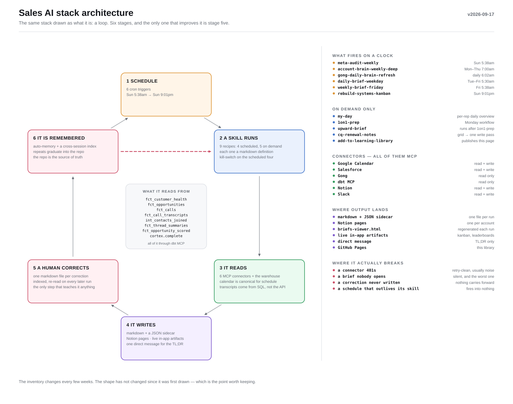

Sales AI stack architecture
A scheduled trigger fires a skill, the skill reads from connectors, the result lands somewhere a person reads it, and a correction gets written down. Drawn twice: once as an inventory, once as the loop it really is.
The inventory

Read top to bottom. Each trigger arrow points at the skill it actually fires — two of them point at the same one. Corrections travel back up the left edge, and they land on the skill, not on the schedule.
Every source is a connector
Writing down what goes in and out of each source turned up the thing worth knowing: there are no direct API calls here, and nothing reads a file off a disk. Six MCP connectors, and that is the whole surface.
| Source | Access | In | Out |
|---|---|---|---|
| Google Calendar | read + write | events, attendees, free/busy | event create + update (rare) |
| Salesforce | read + write | SOQL — opps, accounts, activity | field updates on opportunities |
| Gong | read only | call list, transcripts, users | — |
| dbt MCP | read only | SQL against the mart layer | — |
| Notion | read + write | account brain pages | the brains, one page per account |
| Slack | read + write | channels, threads | direct messages |
Two consequences fall out of that table. dbt MCP is the only route to the warehouse — there is no second path, so when that connector is down the transcript layer is down with it. And Notion is the only source that is both an input and an output, which is why a bad write to an account brain quietly poisons the next morning's brief rather than failing loudly.
The same thing as a loop

The dashed edge is the only one that matters. It runs from memory back to stage two — the recipe — and not back to stage one. Adding another cron entry does not make the stack better; writing down a correction does.
The inventory on the first diagram turns over every few weeks. The loop has not changed shape since it was first drawn, and the failure modes listed in the corner of the second diagram are all the same failure: a stage runs and nobody closes it. A connector returning 401 is noisy and gets fixed. A brief nobody opens is silent, and costs more.